PALESTRANTES
-
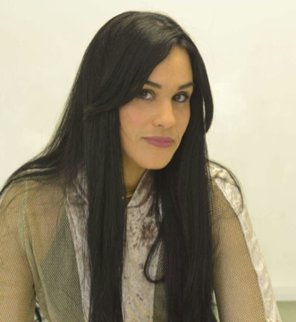
Palestrante: Luciana Neves de Alencar Vidal Freire
Título da palestra: Direito a visita íntima nos estabelecimentos penais militares.
Biografia
Doutoranda em Direito Penal e Processo Penal - Universidad de Buenos Aires
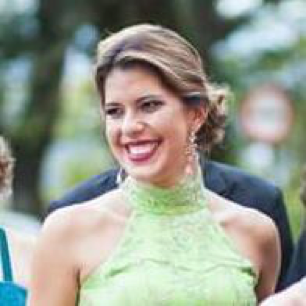Palestrante: Priscilla Barbosa Sales de Albuquerque
Título da palestra: Produção de filmes, revestimentos e bioplástico para fins biotecnologicos
Biografia
Pesquisadora do Centro de Tecnologias Estratégicas do Nordeste (CETENE). Doutora pelo LIKA/UFPE,
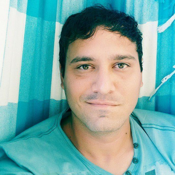Palestrante: Wendell Wons Neves
Título da palestra: Biomédicos na Pós-Graduação em Engenharia Biomédica: Uma Interface entre Engenharia e Saúde
Biografia
Doutorando em Inovação Terapêutica - UFPE
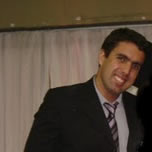Palestrante: Eraldo Martins Guerra filho
Título da palestra: Inovação e pesquisa em saúde que se tornam Startup.
Biografia
Mestre em Engenharia de software - CESAR
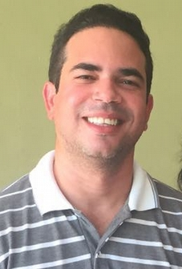Palestrante: Oberdan Alves de Almeida Júnior
Título da palestra: Chatbots, uma nova forma de interação com o computador?
Biografia
Mestre em Ciência da Computação - Cin/UFPE

Palestrante: Nalfran Modesto Benvinda
Título da palestra: A questão da mudança de paradigma na pesquisa científica: uma abordagem a partir do pensamento de Thomas Kunn.
Biografia
Doutor em Filosofia - UFPB/UFPE/UFRN (2017).
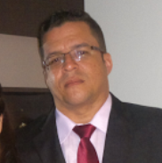Palestrante: Milton Vinicius Morais de Lima
Título da palestra: A Pesquisa como Elemento Transformador do Intelecto Humano e Social.
Biografia
Doutorando em Ciência da Computação - CIn/UFPE.
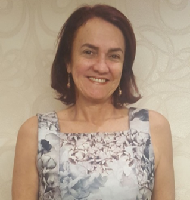Palestrante: Carmina Hissa
Título da palestra: Sextorsão e do estupro virtual, novos crimes-breve análise.
Biografia
Vice-Presidente da Comissão de Crimes Cibernéticos da ABCCRIM
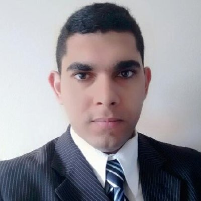Palestrante: Ênio César Silva de Lima
Título da palestra: Forense digital: a perícia e o perito.
Biografia
Mestrando em ciência da computação - CIn/UFPE
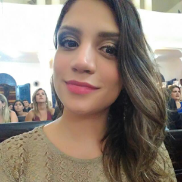Palestrante: Sarah Brandão Palácio
Título da palestra: Nanotecnologia aplicada a cosmetologia.
Biografia
Doutoranda em Nanotecnologia Farmacêutica PPGNANO/UFPE
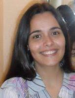Palestrante: Isabella Rossiley Moreira dos Santos
Título da palestra: Aprendendo a como fazer uma revisão sistemática da literatura.
Biografia
Mestrado em Ciência da Computação - CIn/UFPE
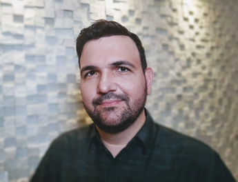Palestrante: Amadeu Sá de Campos Filho
Título da palestra: Tecnologias Educacionais em tempos de mudanças.
Biografia
Doutorado na UFPE com Sandwiche no Fraunhofer Institut em Darmstadt na Alemanha
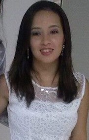Palestrante:Amanda Damasceno Leão
Título da palestra: A Pesquisa Aplicada ao Desenvolvimento de Medicamentos.
Biografia
Doutoranda em ciências farmacêuticas - UFPE
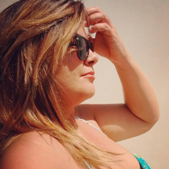Palestrante: Benaia Gonçalves de França Barros
Título da palestra: Plantas medicinais: uma alternativa para o tratamento de câncer.
Biografia
Doutoranda em Tecnologias Energéticas e Nucleares - PROTEN/DEN/UFPE
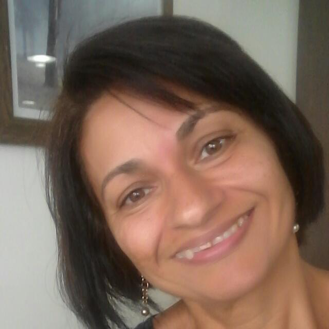Palestrante: Vilma Sobral Bezerra
Título da palestra: O desenvolvimento da ciência e tecnologia na faculdade São Miguel: as contribuições das pesquisas em ciências da saúde e dos alimentos.
Biografia
Doutorado em Biociência Animal - UFRPE.
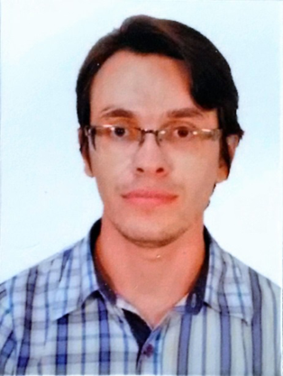Palestrante: Osmar Soares da Silva
Título da palestra: Biotecnologia industrial: produção de proteínas por fungos filamentosos para aplicação em processos industriais.
Biografia
Doutorando em Biotecnologia pela Rede Nordeste de Biotecnologia - RENORBIO/UFRPE.

Palestrante: Franklin Magliano da Cunha
Título da palestra: Consumo de insetos na alimentação humana.
Biografia
Doutor em Entomologia Agrícola pela UFRPE
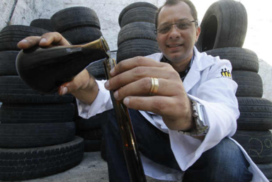Palestrante: Flávio Ferreira da Silva
Título da palestra: Método inovador de extração de Combustíveis a partir de Pneus Inservíveis.
Biografia
Doutor em Tecnologias Energéticas e Nucleares - UFPE

Palestrante: Fábio César Figueiredo de Medeiros Chicout
Título da palestra: Pesquisa em computação: porque o estudante DEVE olhar para ela com carinho.
Biografia
Mestrado em Web Semântica e Integração de Dados - UFPE
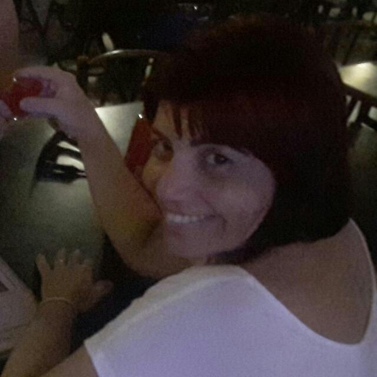Palestrante: Vivia Conceição da Silva
Título da palestra: A importância da produção científica para a enfermagem.
Biografia
Enfermeira especialista em Educação e Saúde/Fiocruz e Enfermagem em Psiquiátrica SES/PE Programa de Residência.

Palestrante: Virgínia Barboza da Silva
Título da palestra: Primeira Impressão.
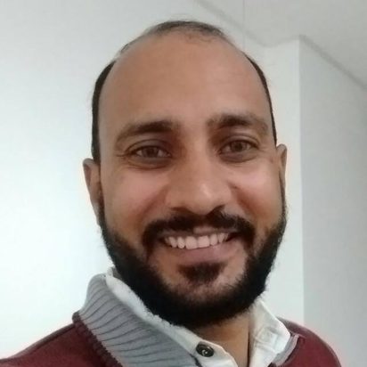Palestrante: Manoel André Fernandes Torres
Título da palestra: Família o que mudou e o que você precisa entender sobre os novos modelos de família.
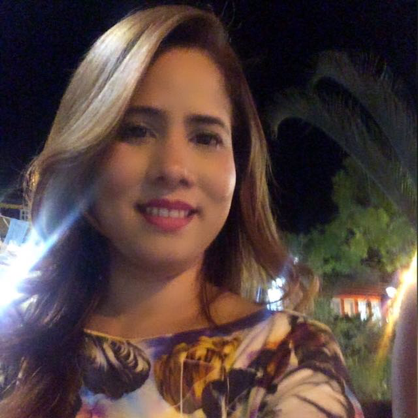Palestrante: Catarina Michelle de Oliveira Ferreira
Título da palestra: Evidências científicas das aplicações de nutracêuticos e fitoterápicos na estética.
Biografia
Doutorado em andamento em BIOLOGIA APLICADA À SAÚDE - UFPE
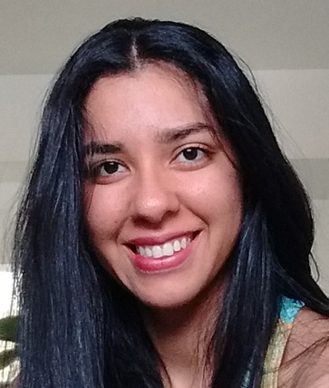Palestrante: Dayse Rafaele Lima dos Santos
Título da palestra: Desafios da pesquisa em obesidade infantil.
Biografia
Doutorado em andamento em Nutrição - UFPE
Palestrante: Pedro de Lima Santana Neto
Título da palestra: O maravilhoso mundo dos animais peçonhentos.
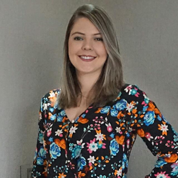Palestrante: Amanda Carla Quintas de Medeiros Vieira
Título da palestra: Avaliação da compatibilidade fármaco-excipiente com o uso da análise térmica.
Biografia
Mestrado em Inovação Terapêutica e doutorado em Inovação Terapêutica - UFPE.

Palestrante: Américo Ernesto Oliveira Júnior
Título da palestra: A Importância da Gestão em Serviço de Saúde.
Biografia
Especialização: em Medicina do Trabalho

Palestrante: Fátima Lúcia Rodrigues Guimarães
Título da palestra: Interdisciplinariedade Científica.
Biografia
Doutoranda em Biologia molecular aplicada - ICB/UPE
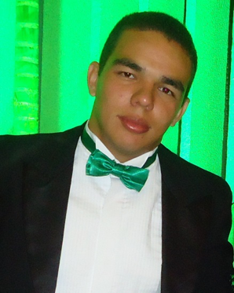Palestrante: Derberson José do Nascimento Macêdo
Título da palestra: Teste de acurácia: Associação entre os diversos métodos de avaliação do estado nutricional com outro tido como padrão ouro..
Biografia
em Mestrado em Cuidados Paliativos - IMIP

Palestrante: José Cristovam Martins Vieira
Título da palestra: Estomaterapia: Caminhos e Desafios.
Biografia
Mestrado em Enfermagem - UFSC
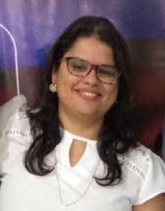Palestrante: Ana Catarina de Melo Araújo
Título da palestra: Programa de Imunizações Avanços e Desafios.
Biografia
Doutoranda em Enfermagem - FENSG/UPE

Palestrante: Érika Maria A. Costa
Título da palestra: Sistema Saussuriano e os eixos de seleção e combinação de Jakobson: em cena a linguagem na afasia.
Biografia
Doutoranda em Ciências da Linguagem - Unicap
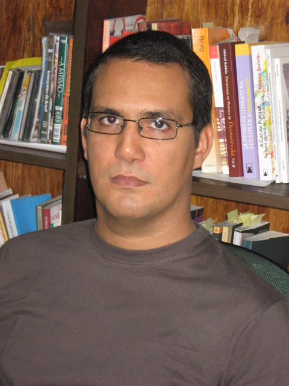Palestrante: Luiz Felipe de Queiroga Aguiar Leite
Título da palestra: O canto do bode humano: uma tese sobre tragicidade, exílio e estranheza em Galileia de Ronaldo Correia de Brito.
Biografia
Doutor em Literatura - UEPB
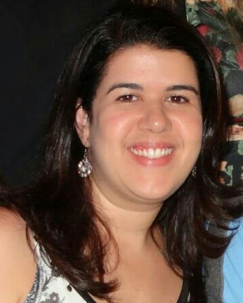Palestrante: Simone Lisboa Bernardes Gomes
Título da palestra: Bases Científicas da Microfisioterapia..
Biografia
Bacharelado em Fisioterapia pela Faculdade Integrada do Recife -FIR; Especialização em Ergonomia -UFPE
Mesa Redonda: Política pública, Saúde e Homofobia
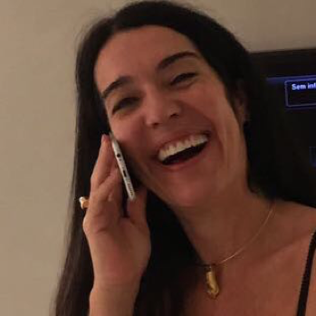Maria do Céu - Psicóloga, produtora cultural e militante LGBT
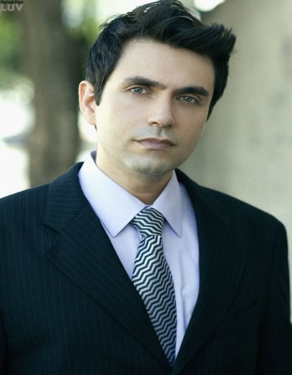Cristiano Carrilho - Mestrado em Direito - UFPE

João Murilo dos Santos - Mestrado em Ciências da Educação - ULHT
Deixe-nos uma mensagem
-